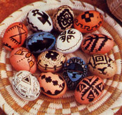

Add an authentic, distinctive touch of Native American culture to this year's Easter festivities.
For centuries, eggs have served as canvases on which people have painted the signs and symbols meaningful to their cultures. In our family, we find particular pleasure in adorning Easter eggs with the extraordinarily beautiful designs characteristic of the Southwest's Native Americans.
To create your own Southwest-style Easter eggs, you'll need vinegar, pencils, india ink, felt-tipped pens, clear plastic varnish, a good supply of uncooked eggs . . . and some natural dye materials. Although you can use any of a wide variety of weeds, flowers, nuts, leaves, bark, and vegetables to create natural dyes, I've come to rely on just a few that seem to give superior results and that are easily available: Red cabbage produces a light robin's-egg blue . . . yellow onion skins yield a dark yellowish brown . . . red onion skins give a light reddish brown . . . coffee makes a light tan . . . beets, surprisingly, lend a light gray cast . . . and sassafras will turn eggs a soft pink.
Other common, easy-to-use dye materials include such flowers as goldenrod, marigold, coreopsis, chrysanthemum, petunia, zinnia, chamomile, and dahlia. Also, leaves-birch, hickory, maple, oak, pear, willow, mint, and ivy, for example-make good egg colorings, as do sumac and pokeweed berries, carrot tops, walnut hulls, and orange, pear, and apple peelings. (And, although I've never tried it, I've read that you can get a nice red dye from fermented prickly pear cactus-a most appropriate background coloring for any natural southwestern motif!)
In other words, nature provides quite a palette for you to choose colors from . . . so don't be afraid to experiment. If you think a material might yield a pleasant dye, go ahead and try it. Be prepared for surprises, though: Natural dyes can be as unpredictable as Mother Nature herself. You may get an entirely different hue than you were expecting. In fact, the same material may produce different shades of color from one dye bath to another.
Remember, too, that dyes from nature generally aren't as bright and vivid as the colors you get from commercial dyes. Instead, they will be soft earth and sky shades-browns, grays, yellows, blues, and pinks-that provide a perfect background for your Indian egg designs.
First, chop the dye materials you'll be using into small pieces and put each kind into a separate enamel, steel, or glass pan. Don't use aluminum pans; for some reason, dye doesn't adhere well to eggs cooked in such containers.
Next, place the eggs-at room temperature-in with the dye material . . . pour enough water into each container to cover the eggs . . . and add a teaspoon of vinegar to each dye bath (except an onion-skin bath, which doesn't require the mordant). You may also want to experiment at times by adding a pinch of alum as a mordant along with the vinegar, since the extra ingredient often changes the dye's hue.
Now bring the dye mixture to a boil, and let the eggs and coloring materials simmer together for 20 minutes and then remove the pan from the heat. Exactly how long you leave the eggs in any given dye depends, of course, on the intensity of coloration you're after. Some of the materials produce pleasing hues with only the initial 20-minute cooking, while others do better if allowed to remain in the bath (off the heat) for longer periods. For example, eggs colored with either red cabbage or sassafras will take on a darker, deeper hue if you leave them, covered, in the dye in the refrigerator overnight. In any case, when the eggs have been dyed to look the way you want them to, take them out of the bath, rinse them in cold water, and let them dry.
Once the eggs are thoroughly dry, select a southwestern Indian design and copy it freehand onto an egg with a soft-lead pencil. Many beautiful Indian designs consist only of a series of simple squares, triangles, dots, curves, circles, or teardrops. For ideas, check your library for books and magazines featur ing primitive art. (A good and inexpensive paperback on the subject is Primitive Art, by Frank Boas, available from Dover Publications, 31 E. Second St., Mineola, NY 11501, for $5.95 plus 85 cents shipping and handling.)
Next, trace over the penciled designs, using a fine-tipped lettering pen and black India ink. I use a B-5 Speedball pen for the basic designs and a quill pen for fine details, but any fine-tipped pen should work just as well.
To keep smearing to a minimum, hold the egg with your middle or index finger and thumb while you paint the front and back central designs first and then fill in the designs that circle the egg from top to bottom. Finally, place the egg in an eggcup to decorate the top and bottom sections.
Be sure to let the ink dry thoroughly on each section before you start inking another area. And if you happen to make a mess of it anyway (mistakes do happen!), you can wipe the smeared part of with a damp cloth or gently scrape it of with a sharp razor blade . . . then you get to start all over again!
When the ink on the finished egg is completely dry, set the egg in a small bottle cap or in an eggcup and spray it with clear plastic varnish to preserve your design (always use such sprays in a well-ventilated area; outdoors is best).
Southwestern Indian designs are also stunning when drawn on undyed white and brown cooked eggs or on the pleasantly pastelcolored eggs produced by Aracauna hens. You can add variety by using other colors of ink or colored felt-tipped pens.
One note of caution: Never eat a naturally dyed egg unless you know positively that the dye you used is nontoxic. Rather than eat ours, we save the eggs we color and add them to our collection for Easters to come. Cooked eggs can be preserved for years-if they aren't cracked-because the inside will gradually harden and shrink away from the shell. If one should crack, though, grab your gas mask and throw the egg away quickly!
An Indian basket makes a perfect "display case" for showing off your fancy southwestern Indian Easter eggs. Another creative and clever way to show your eggs is to make an Easter egg tree. Glue a piece of yarn or ribbon onto the top of each egg with all-purpose glue, and let it dry overnight. Then tie the eggs onto the bare branches of a small tree or bush that you've supported in a decorated can filled with sand. What a charming sight!
|
 |
|
|